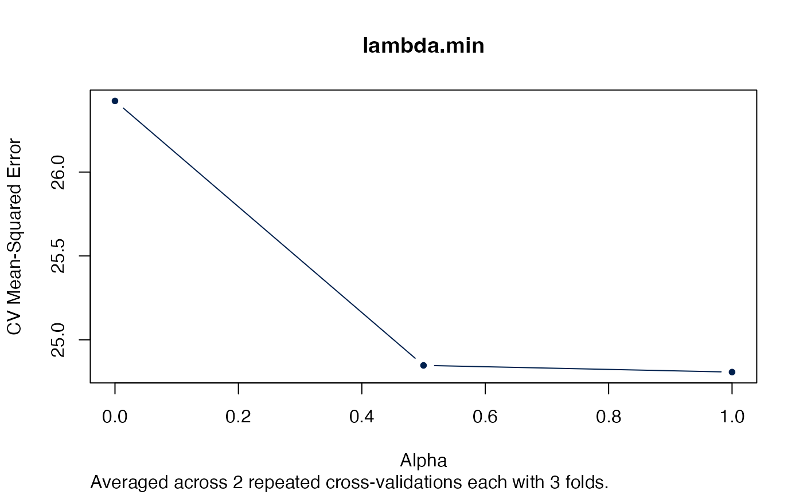

Authors: Sebastian Gibb [aut, cre] (https://orcid.org/0000-0001-7406-4443)
Last modified: 2022-11-28 10:42:05
Compiled: Mon Nov 28 10:46:05 2022
Introduction
The ameld R package extends glmnet::cv.glmnet (Friedman et al. 2022; Friedman, Hastie, and Tibshirani 2010). It supports a repeated cross-validation (rcv.glmnet) and a repeated cross-validation to tune alpha and lambda simultaneously (arcv.glmnet).
Repeated Cross-Validation
rcv.glmnet is used to run a repeated cross-validation. The interface is the same as in cv.glmnet.
set.seed(1011)
# nrepcv should usually be higher but to keep the runtime of the example low
# we choose 2 here
rcvob <- rcv.glmnet(x, y, nrepcv = 2, nfolds = 3)## Loading required package: foreach## Loading required package: future##
## Attaching package: 'future'## The following object is masked from 'package:survival':
##
## cluster
plot(rcvob)
plot(rcvob, what = "path")Accessing coefficients or predicting works exactly as with cv.glmnet:
coef(rcvob)## 101 x 1 sparse Matrix of class "dgCMatrix"
## s1
## (Intercept) -0.1162737
## V1 -0.2171531
## V2 0.3237422
## V3 .
## V4 -0.2190339
## V5 -0.1856601
## V6 0.2530652
## V7 0.1874832
## V8 -1.3574323
## V9 1.0162046
## V10 0.1558299
## V11 .
## V12 .
## V13 .
## V14 .
## V15 .
## V16 .
## V17 .
## V18 .
## V19 .
## V20 .
## V21 .
## V22 .
## V23 .
## V24 .
## V25 .
## V26 .
## V27 .
## V28 .
## V29 .
## V30 .
## V31 .
## V32 .
## V33 .
## V34 .
## V35 .
## V36 .
## V37 .
## V38 .
## V39 .
## V40 .
## V41 .
## V42 .
## V43 .
## V44 .
## V45 .
## V46 .
## V47 .
## V48 .
## V49 .
## V50 .
## V51 .
## V52 .
## V53 .
## V54 .
## V55 .
## V56 .
## V57 .
## V58 .
## V59 .
## V60 .
## V61 .
## V62 .
## V63 .
## V64 .
## V65 .
## V66 .
## V67 .
## V68 .
## V69 .
## V70 .
## V71 .
## V72 .
## V73 .
## V74 .
## V75 -0.1420966
## V76 .
## V77 .
## V78 .
## V79 .
## V80 .
## V81 .
## V82 .
## V83 .
## V84 .
## V85 .
## V86 .
## V87 .
## V88 .
## V89 .
## V90 .
## V91 .
## V92 .
## V93 .
## V94 .
## V95 .
## V96 .
## V97 .
## V98 .
## V99 .
## V100 .
predict(rcvob, newx = x[1:5, ], s = "lambda.min")## lambda.min
## [1,] -1.3447658
## [2,] 0.9443441
## [3,] 0.6989746
## [4,] 1.8698290
## [5,] -4.7372693Simultaneously tune alpha and lambda
arcv.glmnet is used to run a repeated cross-validation and tune alpha and lambda.
set.seed(1011)
# nrepcv should usually be higher but to keep the runtime of the example low
# we choose 2 here
# in similar manner we just evaluate a few alpha values
arcvob <- arcv.glmnet(x, y, alpha = c(0, 0.5, 1), nrepcv = 2, nfolds = 3)We could visualise the effect of different alphas across all lambdas in a plot.
plot(arcvob)Alternatively we could just look at the “best” lambda.
plot(arcvob, what = "lambda.min")
plot(arcvob, what = "lambda.1se")Next we selecting the best autotuned alpha:
i <- which.min.error(arcvob)
plot(arcvob$models[[i]])
Acknowledgment
This work is part of the AMPEL (Analysis and Reporting System for the Improvement of Patient Safety through Real-Time Integration of Laboratory Findings) project.
This measure is co-funded with tax revenues based on the budget adopted by the members of the Saxon State Parliament.
Session Information
## R version 4.2.2 (2022-10-31)
## Platform: x86_64-apple-darwin17.0 (64-bit)
## Running under: macOS Big Sur ... 10.16
##
## Matrix products: default
## BLAS: /Library/Frameworks/R.framework/Versions/4.2/Resources/lib/libRblas.0.dylib
## LAPACK: /Library/Frameworks/R.framework/Versions/4.2/Resources/lib/libRlapack.dylib
##
## locale:
## [1] en_US.UTF-8/en_US.UTF-8/en_US.UTF-8/C/en_US.UTF-8/en_US.UTF-8
##
## attached base packages:
## [1] stats graphics grDevices utils datasets methods base
##
## other attached packages:
## [1] doFuture_0.12.2 future_1.29.0 foreach_1.5.2 ameld_0.0.29
## [5] survival_3.4-0 glmnet_4.1-6 Matrix_1.5-1
##
## loaded via a namespace (and not attached):
## [1] Rcpp_1.0.9 highr_0.9 progressr_0.11.0
## [4] bslib_0.4.1 compiler_4.2.2 jquerylib_0.1.4
## [7] iterators_1.0.14 tools_4.2.2 digest_0.6.30
## [10] viridisLite_0.4.1 jsonlite_1.8.3 evaluate_0.18
## [13] memoise_2.0.1 lattice_0.20-45 rlang_1.0.6
## [16] cli_3.4.1 parallel_4.2.2 yaml_2.3.6
## [19] pkgdown_2.0.6 xfun_0.35 fastmap_1.1.0
## [22] stringr_1.4.1 knitr_1.41 globals_0.16.2
## [25] desc_1.4.2 fs_1.5.2 sass_0.4.4
## [28] systemfonts_1.0.4 rprojroot_2.0.3 grid_4.2.2
## [31] listenv_0.8.0 R6_2.5.1 textshaping_0.3.6
## [34] parallelly_1.32.1 future.apply_1.10.0 rmarkdown_2.18
## [37] purrr_0.3.5 magrittr_2.0.3 codetools_0.2-18
## [40] htmltools_0.5.3 splines_4.2.2 shape_1.4.6
## [43] ragg_1.2.4 stringi_1.7.8 cachem_1.0.6References
Friedman, Jerome, Trevor Hastie, and Robert Tibshirani. 2010. “Regularization Paths for Generalized Linear Models via Coordinate Descent.” Journal of Statistical Software 33 (1): 1–22. https://doi.org/10.18637/jss.v033.i01.
Friedman, Jerome, Trevor Hastie, Rob Tibshirani, Balasubramanian Narasimhan, Kenneth Tay, Noah Simon, and James Yang. 2022. Glmnet: Lasso and Elastic-Net Regularized Generalized Linear Models. https://CRAN.R-project.org/package=glmnet.